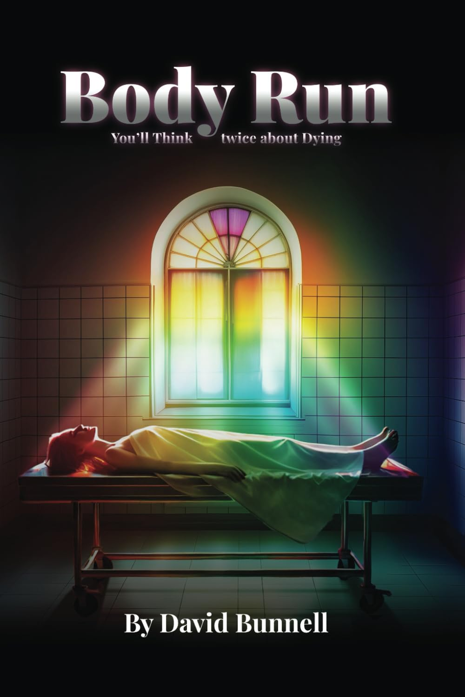

You will think twice about dying.
Inside the fluorescent-lit corridors of a working mortuary, the dead are supposed to be the quiet part of the job. But when a killer begins leaving his own signature on the bodies that pass through, the line between the living and the dead starts to blur. Drawn from the author's own years working inside a real mortuary, Body Run is a brutal, atmospheric thriller that gets under your skin and stays there.
That first chapter had me hooked. I could not put the book down. If I were to recommend this book to someone, I would tell them to carve some time out of their schedules. I loved the twists and turns in the book.
OMG, just OMG. That was one hell of a book. Did not disappoint, that is for sure. Did not see that ending coming, which is what I love in a book. The author knocked this one out of the park.
Atmospheric as hell. From the wet, glistening sidewalks in Downtown to the mellow light of the mortuary garage, the world-building is top-tier.